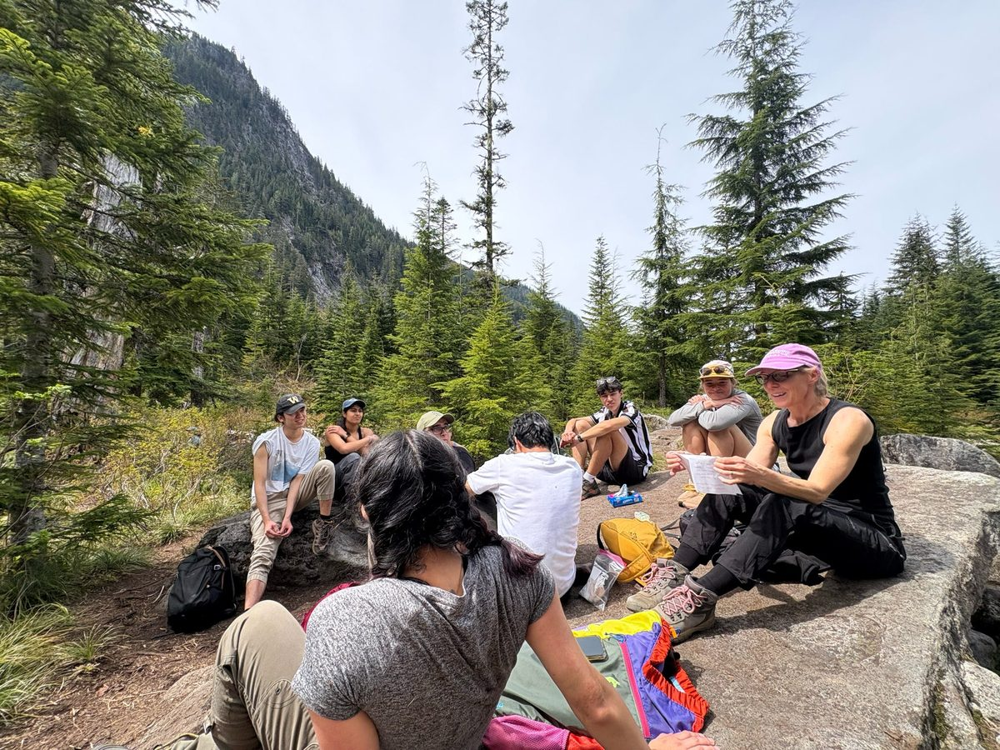

FAQ
Everything you need to know before your first hike, whether you're a student or a professor.
Common questions
How do I sign up for a hike?
Every event on the Events calendar has a sign-up link in its description. New trips are also announced on the mailing list and Instagram. See the step-by-step guide for what happens after you sign up.
What if I sign up and can't make it?
Email your trip lead as soon as you know, so your spot can go to someone on the waitlist. You get a full refund if you give at least 96 hours (4 days) notice.
Do I need a car?
Nope. Peaks is a great way to reach the trails without a car. Participants can sign up as drivers and we carpool to the trailhead. Everyone pays a small gas fee, and drivers are reimbursed.
Does it cost anything?
Just a small gas fee to cover carpooling, paid after your spot is confirmed.
Do I need hiking experience?
No. Each trip lists how challenging it is, so pick one that fits you. Not sure what to bring? Use the gear checklist below.
What kinds of professors join?
Any and all, from every department. Past hikes have included professors from Mechanical Engineering, Ancient Asian Languages, Botany, and many more. Have someone in mind? Recommend a professor.
How do I become a member?
There's no membership and no regular meetings. Just sign up for the hikes and events that interest you. Your only commitment is to the trips you sign up for.
What does a trip lead do?
Trip leads are the backbone of Peaks: upbeat leaders who love learning and teaching outdoors. They reach out to professors, plan trips, and lead them. Trip leads commit to a weekly meeting, leading 2+ hikes a quarter, and a quarterly retreat. Applications open each fall. Meet the team.
For professors
By "professor," we mean any teaching staff. Everyone is welcome.
A trip lead emails you to offer to organize a hike for the upcoming or current quarter.
We work with you to pick the right hike and handle all the logistics, including rides and communication. You just show up.
On the trail, share a short talk, discuss a topic you care about, or host a Q&A. It's a rare chance for students to connect with you outside the classroom.
Want to hike with us? Email peaksandprofessorsuw@gmail.com. We'd love to plan one with you.

Gear checklist
What to bring on a typical Peaks day hike. Your trip lead will let you know if a hike needs anything extra.